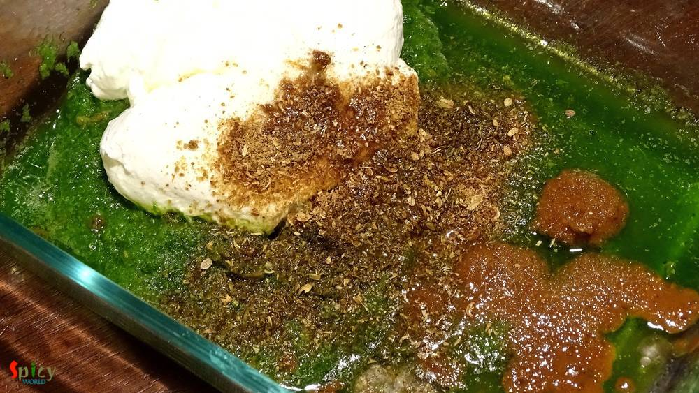
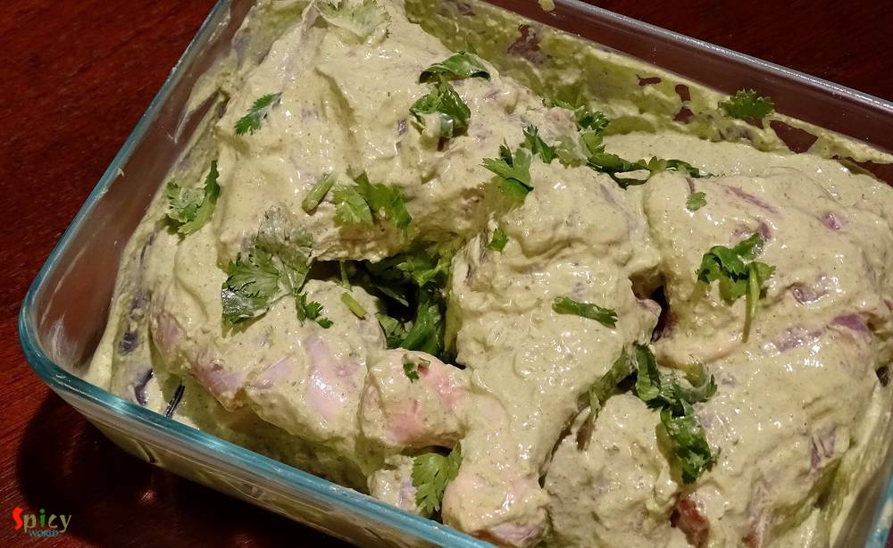
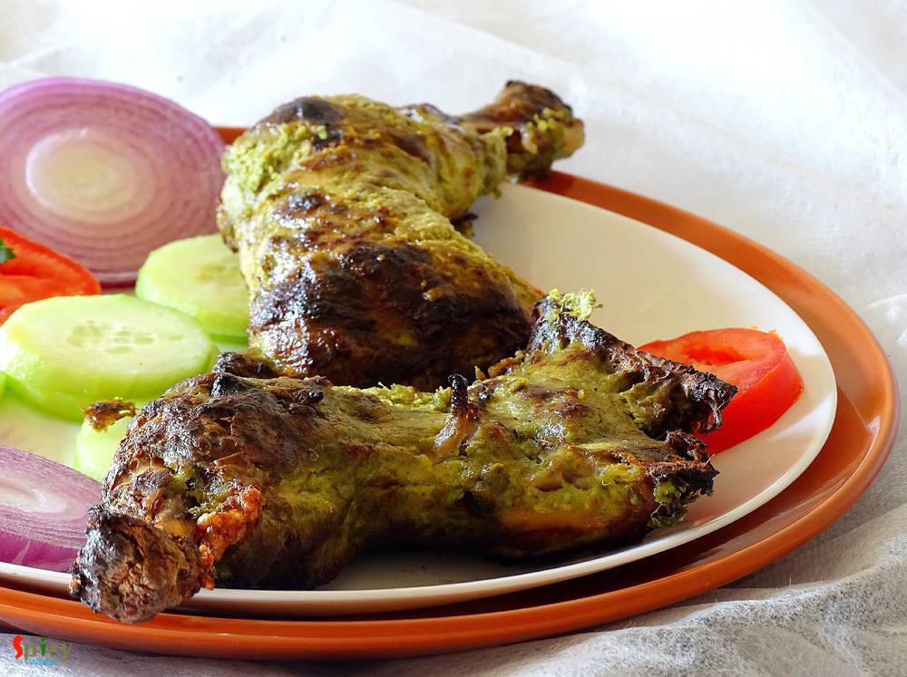

Simple and Easy Recipes
Coriander Chicken Kabab / Dhaniya Murgh Kabab
© 2016 Spicy World, Published on: May 3, 2016
Few months back I saw a recipe of this 'dhaniya murgh kabab' with boneless chicken in facebook. The picture caught my eyes and then I made my mind to give it a try. But I actually got time to make it last weekend as I already had so many recipes in my drafts and to-do list. There were few changes I make with the recipe and we both got very much impressed by it's result. Smokey flavour of any type of kabab attracts me a lot. This time the flavour of fresh coriander leaves + roasted coriander powder made me real greedy. Try this easy recipe in your kitchen and enjoy some scrumptious kabab with your loved ones.

Ingredients
- 4 quarter legs of chicken.
- 1 cup of chopped fresh coriander leaves.
- 2 cloves of garlic.
- 1 inch ginger.
- 4 green chilies.
- 2 Tablespoons of oil.
- 2 Tablespoons of roasted coriander powder.
- 2 - 3 Tablespoons of besan / gram flour.
- Half cup of hung curd.
- Few chopped coriander leaves.
- Salt.
- 1 Tablespoon of black pepper powder.
- 3 Tablespoons of melted butter for basting.


Steps
Put chopped coriander leaves, garlic, ginger and green chilies in a blender with very little water.
Blen them to a smooth paste.
Put all of the paste in a big mixing bowl.

Now heat a Tablespoon of oil in a pan.
Add the besan / gram flour into the hot oil.
Cook this in medium flame for 3 - 4 minutes. Do not burn it.
Add this cooked besan into the green paste.
Add the hung curd and salt into the mixing bowl.

Lastly add roasted coriander powder, black pepper powder and a Tablespoon of oil into the bowl.
Now mix everything with your hand very well.
After that add the chicken legs and chopped coriander leaves. Massage the legs with the marination very well.
Keep this in fridge for overnight or at least 5 - 6 hours.
Before baking, take out the chicken from fridge and let it rest in room temperature for an hour.
Preheat the oven on highest temperature for 15 minutes and arrange the chicken legs on a baking tray or rack.

Bake each side of those chicken in the highest temperature (close to the filament) for 15 - 20 minutes.
Brush each side with butter before serving.
Your dhaniya murgh kabab is ready ...
Enjoy them hot with onion rings and tomato slices ...
")